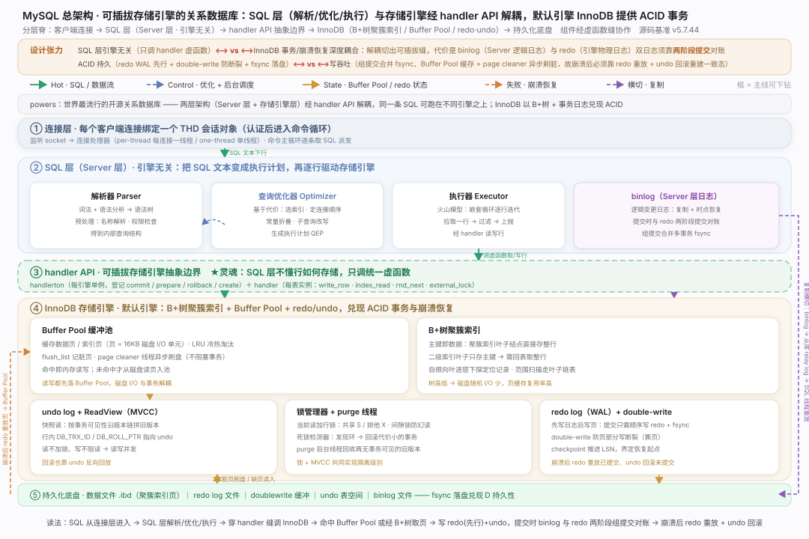
MySQL 核心原理 · 全景主线框架
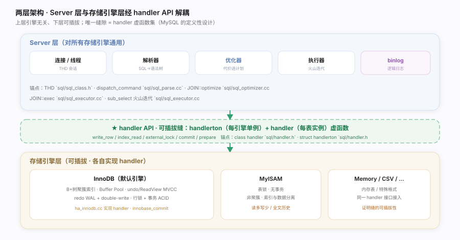
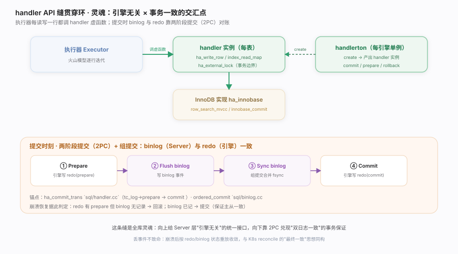
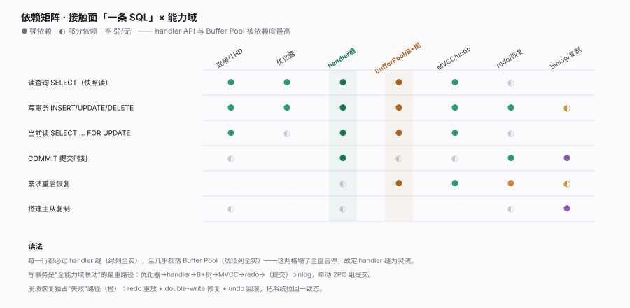
定位家族 0（关系数据库）范例。全库总纲——用"两层架构 × 可插拔引擎 × 执行时机"把 MySQL 拆成可导航的主线，并点出灵魂：SQL 层与存储引擎经 handler API 解耦，一条 SQL 的旅程穿过这条缝落到 InnoDB 的 B+树与事务日志。核实基准（MySQL
5.7.44，本地全量克隆按 grep -n 逐处核实行号）：sql/sql_parse.cc、sql/sql_optimizer.cc、sql/sql_executor.cc、sql/handler.h、storage/innobase/。一句话总纲MySQL 是一台"两层解耦的关系数据库机器"：Server 层把 SQL 解析/优化/执行成计划，再经 handler API 这条可插拔缝把每一行读写下派给存储引擎——默认的 InnoDB 用 B+树聚簇索引 + Buffer Pool 提供高效存取，用 undo+ReadView 做 MVCC 隔离、redo WAL + double-write 做崩溃安全的持久化，并靠 binlog 与 redo 的两阶段组提交兑现复制与一致性；这条 handler 缝就是贯穿全库、连接"引擎无关"与"事务一致"的灵魂。
调优要点
innodb_buffer_pool_size是头号参数：命中率决定是否频繁打磁盘，通常设为可用内存的 50%~75%。innodb_flush_log_at_trx_commit与sync_binlog决定 D 持久性档位：=1 每事务 fsync 最安全但最慢，组提交能缓解吞吐损失。- 主键设计影响聚簇索引：随机主键（如 UUID）导致页分裂与写放大，自增主键顺序插入更友好。
- 长事务拖住 purge：旧版本无法回收 → undo 膨胀、history list 变长，监控并避免大事务久悬。
常见误区
- 优化器一定选最优计划：它基于统计信息估代价，统计过期或估算偏差会选错索引，需
ANALYZE TABLE/ 索引提示纠偏。 - SQL 层直接读写磁盘文件：Server 层只调 handler 虚函数，磁盘存取全在引擎内部（InnoDB 的 Buffer Pool + B+树）。
- redo 就是 binlog / 二者可去其一：redo 是引擎物理日志（崩溃恢复），binlog 是 Server 逻辑日志（复制），职责不同，靠 2PC 保持一致。
- MVCC 快照读也加锁：普通 SELECT 走 ReadView 快照读、不加行锁；只有当前读（
SELECT...FOR UPDATE、UPDATE/DELETE）才加锁。
三维覆盖自检
| 维度 | MySQL 落点 | 代表主线 |
|---|---|---|
| 接触面 | 一条 SQL 语句（连接→解析→优化→执行→引擎→返回） | 接口_SQL执行生命周期 |
| 能力域·会话 | THD 会话对象 + 连接处理器 | 支撑_连接与线程模型 |
| 能力域·计划 | 基于代价的查询优化器 | 支撑_查询优化器 |
| 能力域·可插拔缝（灵魂） | handler / handlerton 虚函数集 | 支撑_handler存储引擎API |
| 能力域·存取 | Buffer Pool + B+树聚簇索引 | 支撑_InnoDB_BufferPool与B树 |
| 能力域·隔离 | undo + ReadView + 行锁 MVCC | 支撑_InnoDB事务与MVCC |
| 执行时机·持久 | redo WAL + double-write + 崩溃恢复 | 支撑_redo日志与崩溃恢复 |
| 执行时机·复制 | binlog + 2PC 组提交 + master→slave | 支撑_binlog与复制 |
与其它家族的同构对照
| 对照系（MySQL 第一列） | MySQL | 相似家族 | 关键差异 |
|---|---|---|---|
| 可插拔存储缝 | handler API 虚函数集 | 家族 3 K8s CRI/CSI 接口 | MySQL 把"存储引擎"整体抽象成一层虚函数 |
| 预写日志 WAL | redo log 先写后刷页 | 家族 6 etcd/Raft WAL | InnoDB 另有 double-write 防撕页 |
| 多版本并发 | undo + ReadView 快照读 | 家族 6 MVCC 存储 | InnoDB 版本链挂在聚簇索引行内 |
| 逻辑复制日志 | binlog row/statement | 家族 4 HDFS edits log | MySQL 双日志 + 2PC 对账是其特色负担 |
MySQL 核心原理 · 接触面 · SQL 执行生命周期
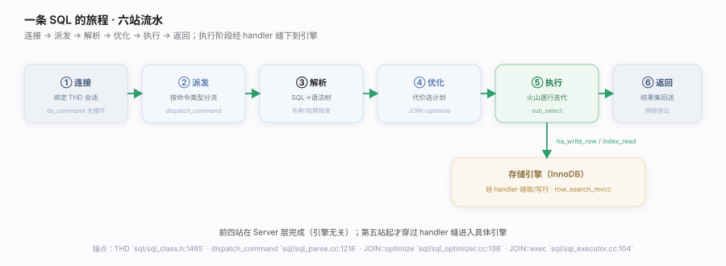
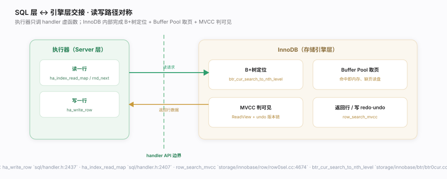
![火山模型]()
定位MySQL 唯一的用户接触面——一条 SQL 语句的完整旅程。用户不关心 B+树或 Buffer Pool，只发一条 SQL、等一个结果集；系统负责把它变成对存储引擎的行级读写。核实基准：
sql/sql_parse.cc、sql/sql_optimizer.cc、sql/sql_executor.cc、sql/handler.h。一句话总纲用户与 MySQL 的唯一接触面是一条声明式 SQL：它穿过连接→派发→解析→优化→执行五站，在执行阶段经 handler API 缝把逐行读写下派给存储引擎——用户只描述"要什么"，优化器与引擎决定"怎么取"，这正是关系数据库把物理存储对应用透明化的根本。
调优要点
- 慢查询先看执行计划：
EXPLAIN看优化器选了哪个索引、扫多少行，定位是否走错索引或全表扫。 - 减少返回列与行：
SELECT *触发回表且传输浪费；只取需要的列，能用覆盖索引最好。 - 连接开销：短连接频繁建/断代价高，用连接池复用 THD。
- 大结果集分页：深分页
LIMIT 100000,20会扫弃大量行，改用键集分页（WHERE id > ?）。
常见误区
- SQL 越短越快：快慢取决于执行计划与扫描行数，与文本长度无关。
- 加了索引就一定走索引：优化器按代价估算，选择性差或统计过期时可能弃用索引。
- 执行器自己读磁盘：执行器只调 handler 虚函数，磁盘存取在引擎内部。
六站职责与落点
| 站 | 职责 | 落点 |
|---|---|---|
| 连接 | 建立会话、认证、读命令 | THD sql/sql_class.h:1465 · do_command sql/sql_parse.cc:901 |
| 派发 | 按命令类型分流 | dispatch_command sql/sql_parse.cc:1218 |
| 解析 | SQL 文本→语法树、名称/权限 | 词法语法分析 + 预处理 |
| 优化 | 代价模型选计划 | JOIN::optimize sql/sql_optimizer.cc:138 |
| 执行 | 火山迭代逐行 | JOIN::exec :104 · sub_select :1224 · evaluate_join_record :1484 |
| 存取 | 经 handler 读写引擎 | ha_write_row handler.h:2437 · ha_index_read_map :2407 · row_search_mvcc row0sel.cc:4674 |
为什么"一条 SQL"是唯一接触面
| 命令式接口（想象） | MySQL 的声明式 SQL |
|---|---|
| "打开表、定位第 5 页、读第 3 行" | "SELECT ... WHERE ..." 只描述想要什么 |
| 用户须懂物理存储 | 优化器决定怎么取，用户无感 |
| 换引擎要改应用 | 换引擎（InnoDB↔MyISAM）SQL 不变 |
MySQL 核心原理 · 支撑能力域 · 连接与线程模型
![THD 与主循环]()
![连接处理器]()
定位SQL 进入服务器的第一道门。每个客户端连接在服务端对应一个
THD 会话对象——它是"当前语句 + 事务 + 权限 + 网络"的全部上下文载体；连接处理器决定用什么线程模型服务这些连接。核实基准：sql/sql_class.h、sql/sql_parse.cc、sql/conn_handler/。一句话总纲每个客户端连接在服务端映射为一个 THD 会话对象——它是语句、事务、权限、网络的统一上下文；服务线程在 do_command 主循环里逐条读命令、派发、返回，复用同一 THD 保持会话状态。默认的 per-thread 模型简单可靠，高并发下可换线程池把连接数与线程数解耦。
调优要点
max_connections控制最大并发连接；过大导致线程/内存爆，过小拒连。thread_cache_size缓存空闲线程，降低频繁建线程开销（per-thread 模型）。- 每线程栈与缓冲（
thread_stack、sort_buffer_size等）是"每连接"开销，乘以连接数评估内存。 - 长连接空转占资源：设置
wait_timeout回收空闲连接。
常见误区
- 连接数越多吞吐越高：超过 CPU/IO 承载后，上下文切换与锁争用反而降吞吐。
- THD 是无状态的：THD 保存会话级状态，同连接多语句共享（事务、临时表、用户变量）。
- 每条 SQL 新建连接：应复用连接（连接池），建连认证代价不小。
THD 承载的上下文
| 维度 | THD 里的载体 | 说明 |
|---|---|---|
| 语句 | 当前 LEX / 查询结构 | 正在执行的 SQL |
| 事务 | 事务状态 + 引擎事务句柄 | autocommit / 显式事务 |
| 权限 | security context | 当前用户可做什么 |
| 网络 | NET 连接 | 收发协议包 |
| 诊断 | 诊断区 warnings/errors | 回给客户端的状态 |
per-thread vs 线程池
| per-thread（默认） | 线程池 |
|---|---|
| 每连接一 OS 线程 | 一组工作线程服务多连接 |
| 实现简单、隔离强 | 连接数与线程数解耦 |
| 万级连接线程过多 | 高并发短事务更省资源 |
一条命令在主循环里的一趟
| 阶段 | 落点 | 说明 |
|---|---|---|
| 读命令包 | do_command sql/sql_parse.cc:901 | 从 NET 读一条协议包 |
| 按类型分派 | dispatch_command sql/sql_parse.cc:1218 | COM_QUERY / COM_QUIT… |
| 解析+优化 | mysql_parse sql/sql_parse.cc:5426 | 建语法树、交优化器 |
| 真正执行 | mysql_execute_command sql/sql_parse.cc:2455 | 按语句种类走对应分支 |
| 会话收尾 | end_connection sql/sql_connect.cc:787 | 断连时清理 THD |
MySQL 核心原理 · 支撑能力域 · 查询优化器
![优化流程]()
![代价模型]()
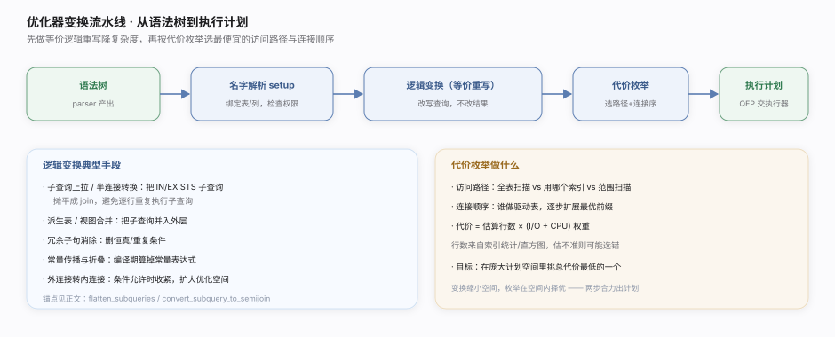
定位把"想要什么"翻译成"怎么取"的大脑。同一条 SQL 可能有成千上万种执行方式（用哪个索引、多表以什么顺序连接），优化器基于代价模型从中选一条估算最省的执行计划。核实基准：
sql/sql_optimizer.cc。一句话总纲优化器是关系数据库的大脑：它把声明式 SQL 的无数种执行方式，用代价模型（估 I/O + CPU）压缩成一条最省的执行计划——为单表选最优索引、为多表定最优连接顺序，全程引擎无关，只向 handler 索要统计信息。它的判断依赖统计新鲜度，这也是"加了索引却不走"的根源。
调优要点
- 用
EXPLAIN读计划：关注type（访问类型）、rows（估扫行数）、key（选中索引）。 - 保持统计新鲜：大量增删改后
ANALYZE TABLE更新索引基数，避免选错。 - 建对索引：为高频过滤/连接/排序列建索引，覆盖索引可免回表。
- 谨慎用提示：
FORCE INDEX等强制手段应在确认优化器估算失准后使用。
常见误区
- 优化器总能选最优：它基于估算，统计偏差、复杂谓词会导致次优计划。
- 索引越多越好：过多索引拖慢写入（每次写都要维护索引 B+树）且占空间。
OR一定能用索引：多列OR常导致优化器放弃索引走全表扫，需改写或加合适索引。
优化器主要变换
| 变换 | 作用 | 落点 |
|---|---|---|
| 入口驱动 | 编排所有优化步骤 | JOIN::optimize sql/sql_optimizer.cc:138 |
| 连接计划 | 组织连接顺序搜索 | JOIN::make_join_plan sql/sql_optimizer.cc:5077 |
| 顺序搜索入口 | 全排列 vs 贪心分派 | choose_table_order sql/sql_planner.cc:1830 |
| 顺序搜索器 | 连接顺序搜索类 | Optimize_table_order sql/sql_planner.h:51 |
| 贪心搜索 | 逐表扩展前缀 | greedy_search sql/sql_planner.cc:2214 |
| 有限前瞻 | 深度受限剪枝 | best_extension_by_limited_search sql/sql_planner.cc:2571 |
| 访问路径 | 单表选索引/扫描 | best_access_path sql/sql_planner.cc:918 |
| 计划物化 | best_positions→JOIN_TAB | get_best_combination sql/sql_optimizer.cc:2753 |
| 去重分组排序 | GROUP/DISTINCT/ORDER 优化 | optimize_distinct_group_order sql/sql_optimizer.cc:1111 |
| 范围优化 | 枚举索引 range 扫描 | test_quick_select sql/opt_range.cc:2810 |
| 代价常量 | I/O+CPU 统一计价 | Cost_model_server sql/opt_costmodel.h:39 |
| CPU 求值代价 | 每行求值 WHERE | row_evaluate_cost sql/opt_costmodel.h:83 |
| I/O 读页代价 | 按页数计、辨命中 | page_read_cost sql/opt_costmodel.h:340 |
全表扫描 vs 索引扫描
| 全表扫描 | 索引扫描 |
|---|---|
| 顺序读全部数据页 | 按索引定位少量页 |
| 选择性低时反而快 | 选择性高时优 |
| 无需回表 | 二级索引可能回表取整行 |
MySQL 核心原理 · 支撑能力域 · handler 存储引擎 API（灵魂）
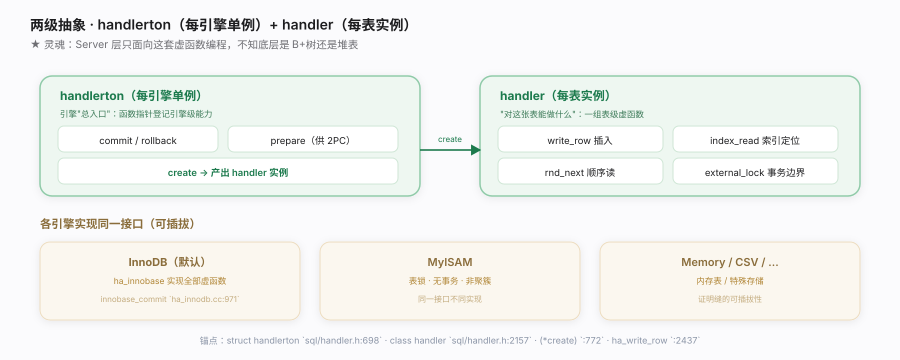
![2PC]()
定位MySQL 的定义性抽象、全库灵魂。它是 SQL 层与存储引擎层之间唯一的缝隙——Server 层不知道数据如何存储，只调用一组统一的虚函数；每个引擎（InnoDB/MyISAM/…）实现这组接口即可插入。核实基准：
sql/handler.h、sql/handler.cc、storage/innobase/handler/ha_innodb.cc。一句话总纲handler API 是 MySQL 的灵魂：handlerton（每引擎单例，登记 commit/prepare/create 等能力）+ handler（每表实例，暴露 write_row/index_read/external_lock 等虚函数）两级抽象，把"存储引擎"整体做成一层可插拔虚函数。它向上给 Server 层引擎无关的统一接口，向下靠两阶段提交协调 binlog 与 redo 双日志的一致——这条缝同时兑现了"引擎可插拔"与"事务可靠"两个目标。
调优要点
- 选对引擎：需要事务/行锁/崩溃安全用 InnoDB（默认）；只读历史归档场景才考虑其它。
- 事务边界即锁边界：
external_lock在语句起止触发，长事务持锁久、拖累并发。 - 2PC 有开销：
innodb_flush_log_at_trx_commit=1+sync_binlog=1最安全，组提交摊薄 fsync 成本。 - 混用引擎慎重：跨引擎事务无法整体 2PC，一致性保证被打破。
常见误区
- handler 是"驱动程序"：它是编译进服务器的 C++ 抽象类，不是外部驱动；引擎以插件/静态方式实现。
- redo 和 binlog 重复可删一个：职责不同（恢复 vs 复制），2PC 靠两者协调，删任一破坏一致或复制。
- 换引擎要改 SQL：SQL 不变，只是底层存取实现换了——这正是 handler 缝的价值。
handler 关键虚函数
| 虚函数 | 作用 | 包装/落点 |
|---|---|---|
| write_row | 插入一行 | ha_write_row sql/handler.h:2437 |
| index_read_map | 按索引定位 | ha_index_read_map :2407 / 虚 :2819 |
| rnd_next | 全表顺序读下一行 | handler 虚函数 |
| external_lock | 语句起止 + 事务边界 | ha_external_lock :2436 |
| create（hton） | 产出 handler 实例 | (*create) sql/handler.h:772 |
两阶段提交落点
| 阶段 | 作用 | 落点 |
|---|---|---|
| 提交总入口 | 驱动 2PC | ha_commit_trans sql/handler.cc:1671 |
| prepare | 触发各引擎写 prepare | tc_log->prepare sql/handler.cc:1792 |
| commit | binlog 协调 + 通知引擎 | tc_log->commit sql/handler.cc:1807 |
| InnoDB prepare | 写 redo prepare 记录 | innobase_xa_prepare ha_innodb.cc:17153 |
| InnoDB commit | 写 redo commit、释放锁 | innobase_commit ha_innodb.cc:4370 |
| 组提交 | 合并多事务 fsync | ordered_commit sql/binlog.cc:9520 |
InnoDB 如何"填"这套虚函数
| 虚函数（包装） | InnoDB 实现 | 落点 |
|---|---|---|
ha_write_row sql/handler.cc:8153 | 插入聚簇索引 B+树 | ha_innobase::write_row ha_innodb.cc:7507 |
| 索引定位 | 内部走 row_search_mvcc 取可见行 | ha_innobase::index_read ha_innodb.cc:8700 |
ha_external_lock sql/handler.cc:8054 | 划事务边界、加意向锁 | handler::ha_external_lock |
handlerton vs handler
| handlerton（每引擎单例） | handler（每表实例） |
|---|---|
| 引擎级能力 + 函数指针表 | 表级操作虚函数 |
| commit/rollback/prepare/create | write_row/index_read/rnd_next |
| 全局注册一次 | 打开一张表创建一个 |
MySQL 核心原理 · 支撑能力域 · Buffer Pool 与 B+树
![B+树聚簇索引]()
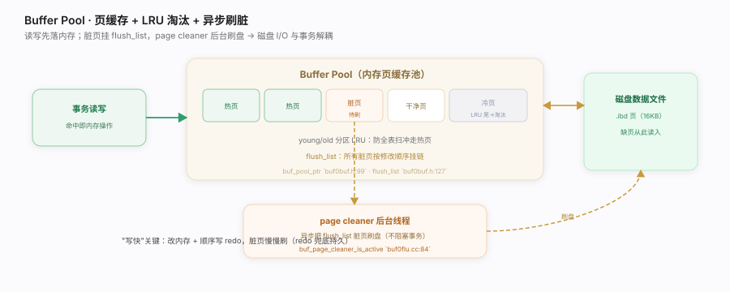
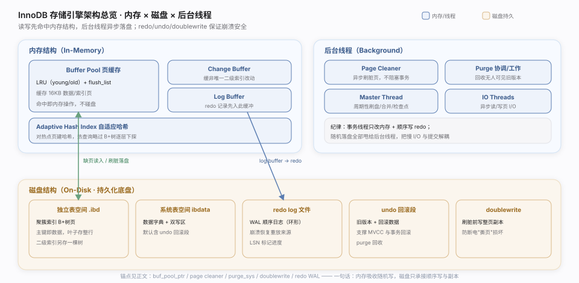
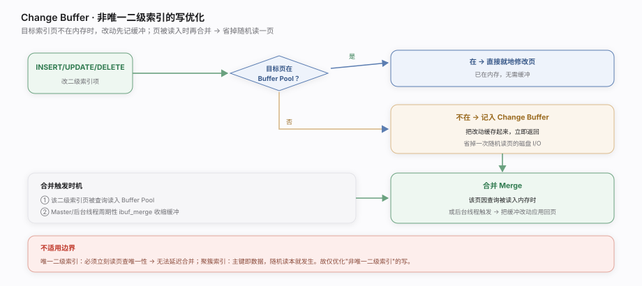
定位InnoDB 的存储底盘。数据以 B+树聚簇索引组织在磁盘的 16KB 页里，Buffer Pool 把热页缓存在内存——这两者决定了 InnoDB 的读写性能上限。核实基准：
storage/innobase/include/buf0buf.h、storage/innobase/buf/、storage/innobase/btr/btr0cur.cc。一句话总纲InnoDB 把每张表组织成以主键排序的 B+树聚簇索引（叶子直接存整行，查询逐层下探矮树），并用 Buffer Pool 把热页缓存在内存——读写先落内存、脏页由 page cleaner 异步刷盘、LRU 冷热淘汰。这套"B+树定位 + 页缓存"是 InnoDB 存取性能的底盘，也让磁盘 I/O 与事务提交解耦，为高吞吐写入铺路。
调优要点
innodb_buffer_pool_size是头号参数：通常设为可用内存 50%~75%，命中率越高磁盘 I/O 越少。- 自增主键顺序插入友好：随机主键（UUID）致页分裂 + 写放大，聚簇索引碎片化。
- 覆盖索引免回表：查询列都在二级索引里则不必回聚簇索引取行。
innodb_io_capacity调 page cleaner 刷脏速率，匹配磁盘能力，避免脏页堆积或过度刷盘。
常见误区
- Buffer Pool 只缓存数据：它也缓存索引页、undo 页、自适应哈希等，是 InnoDB 的中央内存区。
- 提交就把数据页写盘：提交只保证 redo 落盘；数据脏页由 page cleaner 异步刷，靠 redo 兜底持久。
- B+树越深越慢无所谓：树高每加一层多一次页访问，海量表用合适主键控制树高很重要。
- 二级索引查询不回表：只有覆盖索引不回表，否则要拿主键回聚簇索引取整行。
关键结构与落点
| 结构 | 作用 | 落点 |
|---|---|---|
| Buffer Pool | 内存页缓存池 | buf_pool_ptr buf0buf.h:99 |
| 页获取入口 | 命中/未命中统一路径 | buf_page_get_gen buf0buf.cc:4023 |
| 取空闲帧 | 入池前腾块 | buf_LRU_get_free_block buf0lru.cc:1315 |
| young/old 比例 | 防扫表冲走热页 | buf_LRU_old_ratio_update buf0lru.cc:2527 |
| 提升 young | 二次访问才转热 | buf_page_make_young buf0buf.cc:3524 |
| flush_list | 脏页链表 | flush_list buf0buf.h:127 |
| page cleaner | 异步刷脏线程 | buf_page_cleaner_is_active buf0flu.cc:84 |
| 单页刷盘 | 落盘一个脏页 | buf_flush_page buf0flu.cc:1143 |
| B+树游标下探 | 逐层定位记录 | btr_cur_search_to_nth_level btr0cur.cc:745 |
| 页分裂 | 满页一分为二 | btr_page_split_and_insert btr0btr.cc:2514 |
聚簇索引 vs 二级索引
| 聚簇索引（主键） | 二级索引 |
|---|---|
| 叶子存整行数据 | 叶子存索引列 + 主键 |
| 一表一棵 | 可多棵 |
| 主键查一次到位 | 查非索引列需回表 |
MySQL 核心原理 · 支撑能力域 · InnoDB 事务与 MVCC
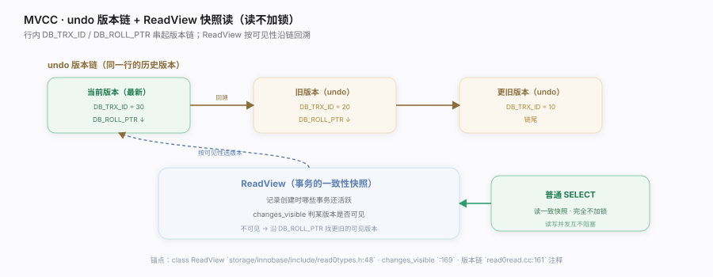
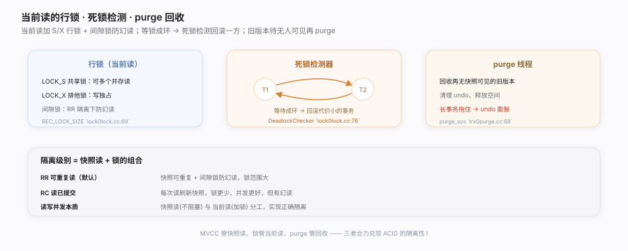
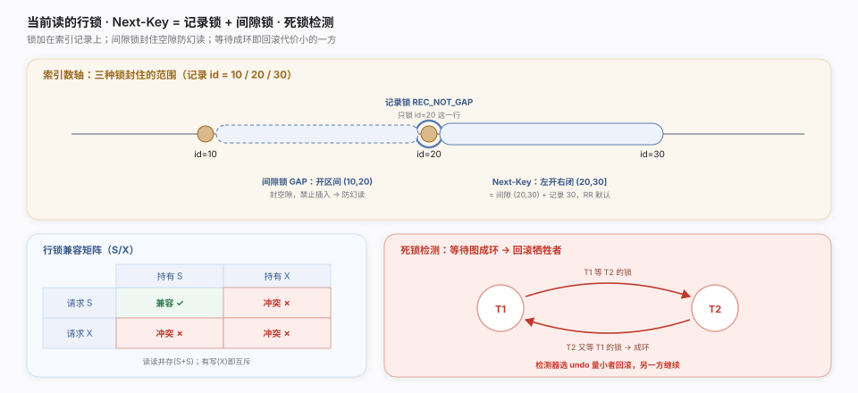
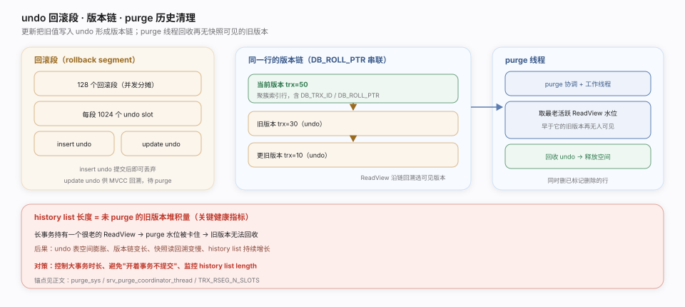
定位InnoDB 兑现"隔离性"（ACID 的 I）的机制。多版本并发控制（MVCC）让读不加锁、写不阻读；行锁 + 死锁检测处理"当前读"的冲突；purge 线程回收再无人可见的旧版本。核实基准：
storage/innobase/include/read0types.h、storage/innobase/read/read0read.cc、storage/innobase/lock/lock0lock.cc、storage/innobase/trx/trx0purge.cc。一句话总纲InnoDB 用 MVCC 兑现隔离性：每行经 undo log 串起版本链，事务用 ReadView 快照按可见性沿链回溯——普通 SELECT 读一致快照且完全不加锁，读写并发互不阻塞；当前读则走行锁 + 间隙锁并由死锁检测器破环，旧版本由 purge 线程在再无快照可见后回收。这套"快照读 + 锁"组合是 InnoDB 高并发与正确隔离的核心。
调优要点
- 隔离级别选择：RR（默认）用间隙锁防幻读但锁范围大；RC 锁更少、并发更好但有幻读。
- 避免长事务：拖住 purge → undo 膨胀、history list 变长，性能与空间双输。
- 死锁重试：应用层要捕获死锁错误并重试事务；按固定顺序访问行降低死锁概率。
- 索引减小锁范围：当前读走索引只锁命中行/间隙，无索引会退化成锁大量行。
常见误区
- MVCC 靠加锁实现：快照读靠 ReadView + undo，不加锁；加锁的是当前读。
- RR 下所有读都可重复：只保证快照读可重复；当前读读的是最新数据。
- 提交后 undo 立即删：purge 要等所有可能看到该版本的快照消失才清，长事务会延迟回收。
- 死锁是 bug：并发系统中死锁正常，InnoDB 会检测并回滚一方，应用重试即可。
关键机制与落点
| 机制 | 作用 | 落点 |
|---|---|---|
| 开快照 | 建 ReadView | MVCC::view_open read0read.cc:554 |
| ReadView | 快照可见性判断 | class ReadView read0types.h:48 · changes_visible :169 |
| 版本重建 | 沿链回溯旧版本 | row_vers_build_for_consistent_read row0vers.cc:1113 |
| undo 版本链 | 存旧版本供回溯/回滚 | read0read.cc:161 注释 |
| 行锁获取 | 当前读加 S/X | lock_rec_lock lock0lock.cc:2033 |
| 锁对象 | 紧凑位图锁结构 | ib_lock_t / REC_LOCK_SIZE lock0lock.cc:69 |
| 死锁检测 | 等待图找环回滚 | DeadlockChecker::check_and_resolve lock0lock.cc:7607 |
| 死锁开关 | 关则退化超时 | innobase_deadlock_detect lock0lock.cc:63 |
| purge 执行 | 回收旧版本 | trx_purge trx0purge.cc:1826 · purge_sys :68 |
快照读 vs 当前读
| 快照读（普通 SELECT） | 当前读（FOR UPDATE / 写） |
|---|---|
| 走 ReadView + undo | 读最新版本 |
| 不加锁 | 加行锁（S/X）+ 间隙锁 |
| 读写不互阻 | 可能等锁、可能死锁 |
MySQL 核心原理 · 支撑能力域 · redo 日志与崩溃恢复
![WAL]()
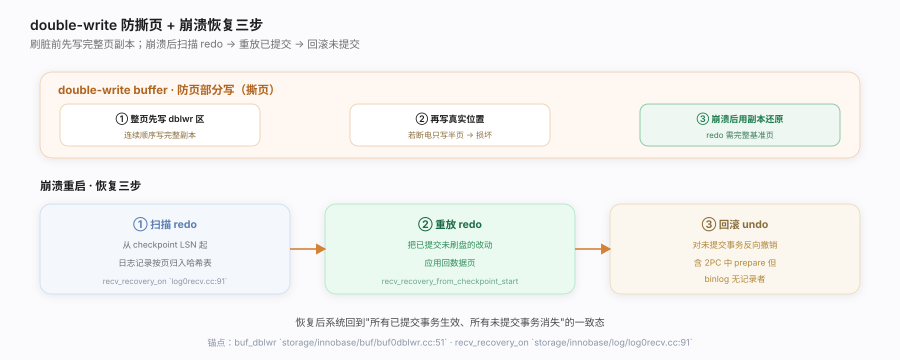
定位InnoDB 兑现"持久性"（ACID 的 D）与崩溃安全的机制。WAL（预写日志）让提交只需顺序写 redo 而非随机刷数据页；double-write 防页部分写断裂；崩溃后靠 redo 重放 + undo 回滚重建一致态。核实基准：
storage/innobase/log/log0log.cc、storage/innobase/log/log0recv.cc、storage/innobase/buf/buf0dblwr.cc。一句话总纲InnoDB 用 WAL 兑现持久性：改动先顺序写 redo（提交即持久，数据脏页异步刷），把随机写换成顺序写；double-write 保完整页副本防撕页；崩溃后从 checkpoint LSN 起扫描并重放 redo 补齐已提交改动、再用 undo 回滚未提交事务，把系统拉回一致态。这套"日志先行 + 恢复三步"是 InnoDB 崩溃安全与高写吞吐兼得的根本。
调优要点
innodb_flush_log_at_trx_commit：=1 每次提交 fsync redo（最安全，默认）；=2 只写 OS 缓存；=0 每秒刷（最快但可能丢 1 秒）。- redo 大小（
innodb_log_file_size× 文件数）影响 checkpoint 频率：太小频繁 checkpoint、刷脏抖动；太大恢复时间长。 - double-write 有写放大（每页写两次）：极快且带掉电保护的硬件可评估关闭，一般保持开启。
- 恢复慢多因 redo 太大或脏页太多：监控 checkpoint age，避免长时间不刷盘。
常见误区
- 提交就把数据页写盘：提交只保证 redo 落盘（D 由 WAL 兜底），数据脏页异步刷。
- redo 能修复撕页：redo 是增量，需完整基准页；撕页要靠 double-write 的完整副本还原。
- 崩溃会丢已提交事务：只要 redo（据 flush 设置）已落盘，重放即可恢复，不丢。
- undo 只为回滚：undo 同时支撑 MVCC 快照读的旧版本回溯（见事务与 MVCC 篇）。
关键机制与落点
| 机制 | 作用 | 落点 |
|---|---|---|
| mtr 提交 | 组改动追加 redo + 推 LSN | mtr_t::commit mtr0mtr.cc:477 |
| redo 写盘 | WAL 顺序落日志 | log_write_up_to log0log.cc:1217 |
| checkpoint | 界定恢复起点 | log_checkpoint log0log.cc:1780 |
| double-write 收集 | 整页写连续区 | buf_dblwr_add_to_batch buf0dblwr.cc:1096 |
| double-write 落盘 | 批量刷 dblwr 区 | buf_dblwr_flush_buffered_writes buf0dblwr.cc:946 |
| 恢复扫描 | 从 checkpoint 建哈希表 | recv_recovery_from_checkpoint_start log0recv.cc:4040 |
| 恢复重放 | 应用 redo 到数据页 | recv_apply_hashed_log_recs log0recv.cc:2625 |
| 恢复标志 | 恢复进行中 | recv_recovery_on log0recv.cc:91 |
redo vs undo
| redo（重做日志） | undo（回滚日志） |
|---|---|
| 记"改成什么"（物理） | 记"原来是什么"（逻辑/旧值） |
| 崩溃后重放已提交 | 回滚未提交 + MVCC 旧版本 |
| WAL 顺序写 | 挂在版本链上 |
MySQL 核心原理 · 支撑能力域 · binlog 与复制
![binlog 组提交]()
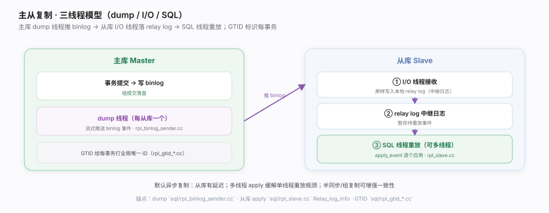
定位MySQL 高可用与横向扩展的基础。binlog 是 Server 层的逻辑变更日志（引擎无关），既用于时点恢复，也是主从复制的数据源；它与引擎 redo 靠两阶段提交保持一致，并用组提交提升吞吐。核实基准：
sql/binlog.cc、sql/rpl_slave.cc、sql/rpl_binlog_sender.cc。一句话总纲binlog 是 Server 层引擎无关的逻辑变更日志：它既是 2PC 里协调 redo 一致的协调者，又用组提交（FLUSH/SYNC/COMMIT 三阶段）把多事务的 fsync 合并以提吞吐；主从复制则靠主库 dump 线程推 binlog、从库 I/O 线程落 relay log、SQL 线程重放，配合 GTID 让复制与故障切换可靠——这条日志把单机 ACID 扩展成集群级的高可用与读扩展。
调优要点
sync_binlog=1+innodb_flush_log_at_trx_commit=1是最安全组合，组提交摊薄 fsync 成本。- binlog 格式选 ROW：statement 格式对非确定函数（NOW/UUID）复制不安全，ROW 记实际行变更更可靠。
- 主从延迟：单线程 SQL 重放是瓶颈，开多线程复制（
slave_parallel_workers）并行 apply。 - 用 GTID 简化运维：故障切换、跳过错误事务比文件名+偏移更清晰可靠。
常见误区
- 复制靠 redo：复制用的是 binlog（Server 层逻辑日志），redo 是引擎私有、不出引擎。
- 从库和主库强一致：默认异步复制，从库有延迟；要更强需半同步/组复制。
- binlog 可关掉不影响：关了不能复制、不能做时点恢复；主库通常必开。
- statement 格式总是对的：非确定语句在从库可能算出不同结果，ROW 格式更安全。
关键机制与落点
| 机制 | 作用 | 落点 |
|---|---|---|
| binlog 提交协调 | 2PC 中的协调者 | ordered_commit sql/binlog.cc:9520 · binlog_prepare :1818 |
| 组提交入队 | 事务排入三阶段 | enroll_for binlog.cc:2123 · change_stage :9160 |
| FLUSH 阶段 | 批量写 binlog 文件 | process_flush_stage_queue binlog.cc:8943 |
| SYNC 阶段 | 整批一次 fsync | sync_binlog_file binlog.cc:9224 |
| COMMIT 阶段 | 批量通知引擎提交 | process_commit_stage_queue binlog.cc:9013 |
| dump 线程 | 主库推 binlog | Binlog_sender::run rpl_binlog_sender.cc:326 |
| I/O 线程 | 从库收事件写 relay | handle_slave_io rpl_slave.cc:5606 |
| SQL 线程重放 | 读 relay + apply | apply_event_and_update_pos rpl_slave.cc:4726 |
| GTID 更新 | 提交并入已执行集 | Gtid_state::update_on_commit rpl_gtid_state.cc:204 |
redo vs binlog
| redo（引擎层） | binlog（Server 层） |
|---|---|
| 物理页改动、循环写 | 逻辑事件、追加写 |
| 崩溃恢复 | 复制 + 时点恢复 |
| InnoDB 私有 | 引擎无关、所有引擎共用 |